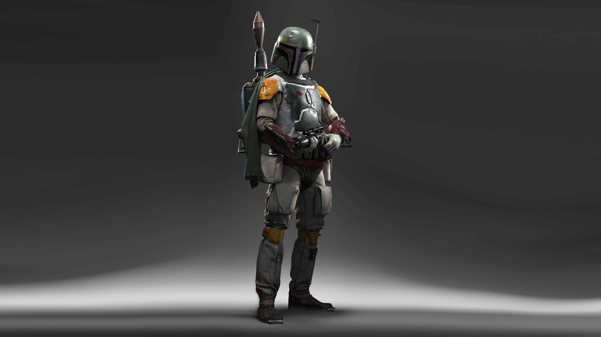

The Jedi Order tracked down Jango Fett along with the CIS on Geonosis. Boba Fett's father was killed by Jedi master Mace Windu. He takes his father's helmet implying that is how he obtained his madalorian armor in the original trilogy. (image to the right)
Boba has appeared in the original trilogy and prequels; however, he only has shown up in the only one of the prequel movies. He is only a child in Episode 2 "Attack of The Clones'”. Boba Fett has a more important role in the 2 movies for the original trilogy. Boba Fett is an unaltered clone of Jango Fett. He is the template in which the Kaminoans (an alien race that is dedicated to cloning) used to create a clone army for the Republic. Boba Fett is seen as a boy in Episode 2 "Attack of the Clones'” when Obi Wan is sent to investigate the assassin attempt on Senator Amidala. (video at the bottom for Boba's first appearance)